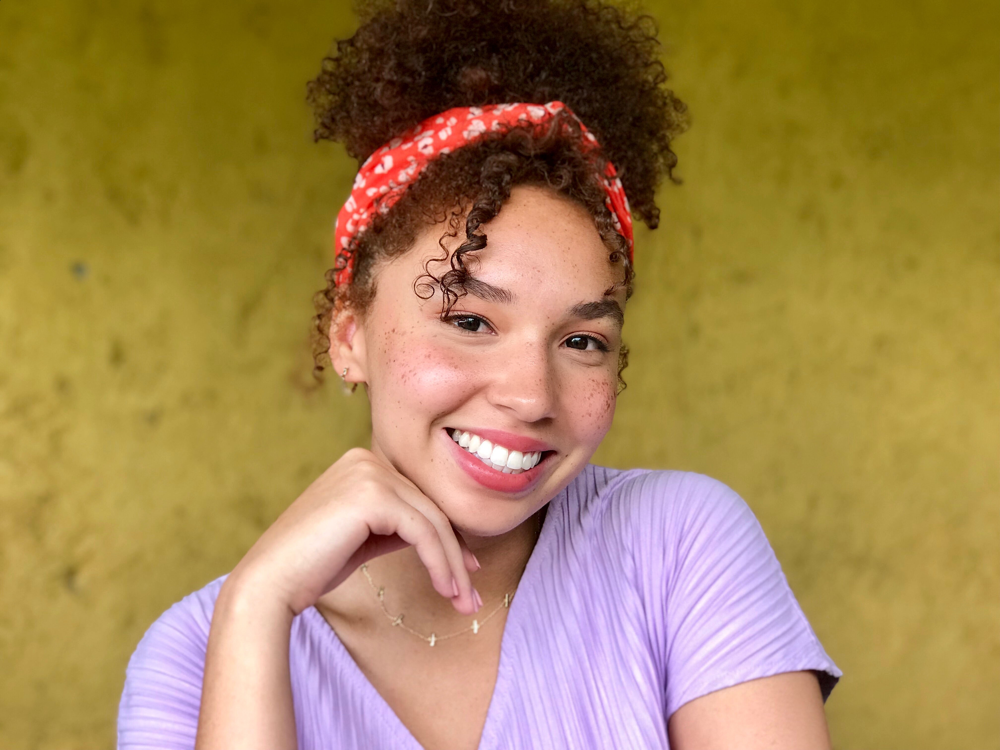

Megan Page

235 Bowery, New York, NY, 10002
| Contact |
Schedule |
Social |
e-mail: mvp76.miami.edu
tel: (516)-551-6350 |
Available
Mon-Weds: 1:35pm-6:30pm
Fri: 11:00 am - 6:00 pm |
Instagram
Twitter
|
About Me
Third year student at the Univeristy of Miami majoring in Computer Science and Interactive Media with a minor in Art and Art History, and Chemistry. I plan to join the Tech industry as a UX designer, focusing on design for vulnerable and underrepresented commnuities.
Education
Bachelor of Science in Interactive Media
Bachelor of Arts in Computer Science
Minor in Chemistry
Minor in Art and Art History
Leadership/Team Experiences and Skills
- National Institute of Health
Minority Health and Health Disparity Researcher (MHRT)
Conducted clinical research on chosen topic involving Jamaican rural health and design in health for vulnerable communities in partnership with The Univeristy of the West Indies. A literature review was compiled before data collection and analysis. Collboaration and feedback between foreign/home mentor was provided in preparation for the publication process.
- North Shore University Hospital
Emergency Department Ambassador
Known as "the voice of the patients"; addressing patient/patient family concerns amidst a fast paced, high demand environment. Responsible for various operational tasks within the emergency department, including delivery of documents and transportation of patients, and attending to the needs of the medical staff, patients, and patient families during their stay in the emergency room to optimize patient experience.
- My Spectrum School
Teacher Assisstant
Facilitated classroom activities as an assistant teacher and created lesson plans for the summer school Science, Technology, Engineering, Art, and Technology (STEAM) curriculum for children in socioeconomic disadvantaged situations.
- Olive & Bette's
Buyer Assisstant
Facilitating work in a corporate office by purchasing, sorting, and allocating clothing with a team of associated working to get fresh merchandise to four store locations, every day. Experience with using Microsoft Word and Excel for data entry.
Hobbies
- Volunteering
- Cooking
- Hiking